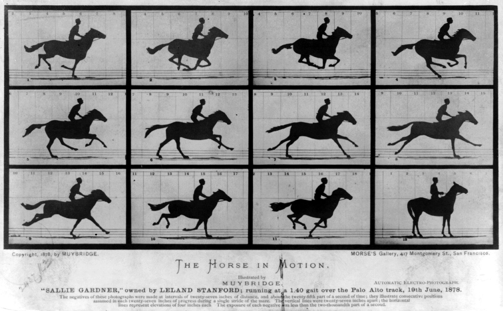

|
Sinemanın tarihi, 19. yüzyılın sonlarında başlayan, film
teknolojileri kullanılarak yaratılan bir görsel sanat formunun
gelişimini anlatır . Filmin sanatsal bir mecra olarak ortaya
çıkışı net bir şekilde tanımlanmamıştır. Daha önce, Ottomar
Anschütz'ün 1894'te Berlin'de gerçek boyutlu hareketli resimlerin
ilk gösterimi gibi başkaları tarafından yapılan sinematografik
gösterimler de olmuştur; ancak, Lumière kardeşlerin on kısa
filminin 28 Aralık 1895'te Paris'te ticari, halka açık gösterimi,
projeksiyonlu sinematografik hareketli resimlerin atılımı olarak
kabul edilebilir. İlk filmler siyah beyazdı, bir dakikadan
kısaydı, kaydedilmiş sesi yoktu ve sabit bir kameradan tek bir
çekimden oluşuyordu. İlk on yılda film, bir yenilikten, dünya
çapında film yapım şirketleri ve stüdyoları kurulan yerleşik bir
kitle eğlence endüstrisine dönüştü. Genel bir sinematik dile doğru
giden kurallar gelişti ve film kurgusu, kamera hareketleri ve
diğer sinematik teknikler filmlerin anlatısında belirli roller
üstlendi . Televizyon (1950'lerden beri ana akım), ev videosu
(1980'ler) ve internet (1990'lar) dahil olmak üzere popüler yeni
medya, filmlerin dağıtımını ve tüketimini etkiledi. Film yapımı
genellikle yeni medyaya uyacak içerikle ve teknik yeniliklerle (
geniş ekran (1950'ler), 3B ve 4B film dahil ) ve sinema
gösterimlerini çekici tutmak için daha muhteşem filmlerle yanıt
verdi. Daha ucuz ve daha kolay kullanılan sistemler ( 8 mm film ,
video ve akıllı telefon kameraları dahil), ev filmleri ve video
sanatı dahil olmak üzere her türlü amaç için giderek artan sayıda
insanın farklı kalitede filmler oluşturmasına olanak sağladı .
Teknik kalite genellikle profesyonel filmlerden daha düşüktü,
ancak dijital video ve uygun fiyatlı, yüksek kaliteli dijital
kameralarla iyileştirildi . Zamanla iyileşen dijital yapım
yöntemleri, 1990'larda daha popüler hale geldi ve giderek daha
gerçekçi görsel efektler ve popüler uzun metrajlı bilgisayar
animasyonlarıyla sonuçlandı . Sinema tarihi boyunca çeşitli film
türleri ortaya çıkmış ve her biri farklı başarı oranlarına
ulaşmıştır.
Filmin tarihi Madde Konuşmak Okumak Düzenlemek Geçmişi görüntüle
Aletler Dış görünüş saklamak Metin Küçük Standart Büyük Genişlik
Standart Geniş Renk (beta) Otomatik Işık Karanlık Vikipedi, özgür
ansiklopedi Bu makale, sanatsal bir mecra olarak filmin tarihini
ele almaktadır. Sinema teknolojisinin tarihi için Film
teknolojisinin tarihi bölümüne bakınız . Bu makale , rahatça
okunup gezinilemeyecek kadar uzun olabilir . Bu etiket
eklendiğinde, okunabilir düzyazı boyutu 15.000 kelimeydi. İçeriği
alt makalelere ayırmayı , yoğunlaştırmayı veya alt başlıklar
eklemeyi düşünün . Lütfen bu konuyu makalenin tartışma sayfasında
tartışın . ( Mayıs 2025 ) Sinemanın tarihi, 19. yüzyılın
sonlarında başlayan, film teknolojileri kullanılarak yaratılan bir
görsel sanat formunun gelişimini anlatır . Filmin sanatsal bir
mecra olarak ortaya çıkışı net bir şekilde tanımlanmamıştır. Daha
önce, Ottomar Anschütz'ün 1894'te Berlin'de gerçek boyutlu
hareketli resimlerin ilk gösterimi gibi başkaları tarafından
yapılan sinematografik gösterimler de olmuştur; ancak, Lumière
kardeşlerin on kısa filminin 28 Aralık 1895'te Paris'te ticari,
halka açık gösterimi, projeksiyonlu sinematografik hareketli
resimlerin atılımı olarak kabul edilebilir. İlk filmler siyah
beyazdı, bir dakikadan kısaydı, kaydedilmiş sesi yoktu ve sabit
bir kameradan tek bir çekimden oluşuyordu. İlk on yılda film, bir
yenilikten, dünya çapında film yapım şirketleri ve stüdyoları
kurulan yerleşik bir kitle eğlence endüstrisine dönüştü. Genel bir
sinematik dile doğru giden kurallar gelişti ve film kurgusu,
kamera hareketleri ve diğer sinematik teknikler filmlerin
anlatısında belirli roller üstlendi . Televizyon (1950'lerden beri
ana akım), ev videosu (1980'ler) ve internet (1990'lar) dahil
olmak üzere popüler yeni medya, filmlerin dağıtımını ve tüketimini
etkiledi. Film yapımı genellikle yeni medyaya uyacak içerikle ve
teknik yeniliklerle ( geniş ekran (1950'ler), 3B ve 4B film dahil
) ve sinema gösterimlerini çekici tutmak için daha muhteşem
filmlerle yanıt verdi. Daha ucuz ve daha kolay kullanılan
sistemler ( 8 mm film , video ve akıllı telefon kameraları dahil),
ev filmleri ve video sanatı dahil olmak üzere her türlü amaç için
giderek artan sayıda insanın farklı kalitede filmler oluşturmasına
olanak sağladı . Teknik kalite genellikle profesyonel filmlerden
daha düşüktü, ancak dijital video ve uygun fiyatlı, yüksek
kaliteli dijital kameralarla iyileştirildi . Zamanla iyileşen
dijital yapım yöntemleri, 1990'larda daha popüler hale geldi ve
giderek daha gerçekçi görsel efektler ve popüler uzun metrajlı
bilgisayar animasyonlarıyla sonuçlandı . Sinema tarihi boyunca
çeşitli film türleri ortaya çıkmış ve her biri farklı başarı
oranlarına ulaşmıştır. Öncüller Ana madde: Filmin öncüleri Filmin
bir sanat formu olarak kullanımı, kökenlerini (sözlü) hikaye
anlatımı , edebiyat, tiyatro ve görsel sanatlar gibi sanatlardaki
daha önceki geleneklere dayandırır . Cantastoria ve benzeri eski
gelenekler, hikaye anlatımını birbiri ardına gösterilen veya
işaret edilen bir dizi görüntüyle birleştirmiştir. Modern film
teknolojisinin ortaya çıkışından önce, ışık ve gölgeleri sanat
yaratmak için kullanan filmin öncülleri arasında gölge sanatı ,
gölge kuklacılığı , camera obscura ve sihirli fener yer alır .
Gölge sanatı ve gölge kuklacılığı, hareketli görüntüleri eğlence
ve hikaye anlatımı için kullanma amacının erken örneklerini temsil
eder. Uzak Doğu'da ortaya çıktığı düşünülen bu sanat biçimi,
anlatıların oluşturulmasına yardımcı olmak için ellerin veya
nesnelerin oluşturduğu gölgeleri kullanır. Gölge kuklacılığı,
yüzyıllar boyunca Asya'da, özellikle Cava'da popülerlik kazanmış
ve sonunda Aydınlanma Çağı'nda Avrupa'ya yayılmıştır . 16.
yüzyılda, eğlendiriciler performanslarını güçlendirmek için camera
obscura ve diğer projeksiyon biçimleri gibi teknikler kullanarak
genellikle hayalet görüntüleri yarattılar. 17. yüzyılın ikinci
yarısında geliştirilen sihirli fener gösterileri, ölüm, canavarlar
ve diğer korkutucu figürlerin görüntüleriyle bu geleneği sürdürmüş
gibi görünüyor. 1790 civarında, bu uygulama phantasmagoria olarak
bilinen bir tür multimedya hayalet gösterisine dönüştü . Bu
popüler gösteriler izleyicileri mekanik slaytlar, arkadan
projeksiyon, mobil projektörler, üst üste bindirme , çözünmeler ,
canlı oyuncular, duman (üzerine projeksiyonların yansıtılmış
olabileceği), kokular, sesler ve hatta elektrik şokları kullanarak
eğlendirdi. İlk sihirli fener gösterilerinin çoğu izleyicileri
korkutmayı amaçlarken, projeksiyoncuların ilerlemeleri daha geniş
aile kitlelerine hitap edebilecek yaratıcı ve hatta eğitici hikaye
anlatımına olanak sağladı. Eriyen görünümlerin ve kromatropun
kullanımı gibi yeni öncü teknikler, iki yansıtılan görüntü
arasında daha yumuşak geçişlere olanak sağladı ve daha güçlü
anlatılar sağlanmasına yardımcı oldu. 1833 yılında Joseph Plateau
, Michael Faraday ve Simon Stampfer tarafından telli tekerleklerde
stroboskopik illüzyon üzerine yapılan bilimsel çalışma, bir süre
birçok Avrupa ülkesinde popüler olan Fantascope, diğer adıyla
stroboskopik disk veya fenakistiskop'un icadına yol açtı .
Plateau, bunun fantasmagorilerde kullanılmak üzere daha da
geliştirilebileceğini düşündü ve Stampfer, rulolar üzerinde
şeritler bulunan daha uzun sahneler için bir sistem ve ayrıca
şeffaf bir versiyon (muhtemelen projeksiyon için tasarlanmış)
hayal etti. Plateau, Charles Wheatstone , Antoine Claudet ve
diğerleri, daha eksiksiz bir gerçeklik yanılsaması için tekniği
stereoskop (1838'de tanıtıldı) ve fotoğrafçılık (1839'da
tanıtıldı) ile birleştirmeye çalıştılar, ancak on yıllar boyunca
bu tür deneyler çoğunlukla uzun pozlama sürelerine duyulan
ihtiyaç, yansıyan ışık ışığa duyarlı kimyasallara düşerken hareket
eden nesnelerin etrafında hareket bulanıklığı nedeniyle
engellendi. Birkaç kişi stop motion teknikleriyle iyi sonuçlar
elde etmeyi başardı, ancak bunlar çok nadiren pazarlandı ve
kronofotoğrafçılığın ortaya çıkışından önce hiçbir animasyonlu
fotoğrafçılık biçiminin kültürel etkisi yoktu.
Kronofotografi olarak bilinen erken dönem fotoğrafik dizilerin
çoğu, başlangıçta hareket halindeyken görüntülenmek üzere
tasarlanmamıştı ve tipik olarak hareket halindeki nesnelerin
incelenmesinde ciddi, hatta bilimsel bir yöntem olarak
sunuluyordu. Diziler neredeyse yalnızca kameranın önünde basit bir
hareket gerçekleştiren insanları veya hayvanları içeriyordu.
1878'de Hareket Halindeki At kabin kartlarının yayınlanmasıyla
başlayan fotoğrafçı Eadweard Muybridge , hayvanların ve insanların
hareketlerinin gerçek zamanlı olarak yüzlerce kronofotografik
çalışmasını yapmaya başladı. Kısa süre sonra onu Étienne-Jules
Marey , Georges Demenÿ , Albert Londe ve Ottomar Anschütz gibi
diğer kronofotoğrafçılar izledi . 1879'da Muybridge, hayvanların
hareket halindeyken görüntülenmesi üzerine dersler vermeye başladı
ve kayıtlarının konturlarının animasyonlarını cam disklere
yansıtmak için Zoopraxiscope'unu kullandı.
|

|
{kind=link}